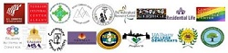

High Level Consultation Meeting on HIV in Conservative Social Settings in Istanbul, Turkey
In collaboration with the International AIDS Society (IAS), GIHHR organized the Second High Level Consultation Meeting on HIV in Conservative Social
Settings at Bahcesehir University, Istanbul, Turkey during January 30-31, 2016. This event was sponsored by the OPEC Fund for International
Development (OFID) to invite a discussion on the nature of the HIV epidemic among key populations. Dr. Arash Alaei and Dr. Kamiar Alaei played key
roles in organizing and presenting at the conference. The major theme of this conference is A Rights Based Approach to HIV-Inclusion and Support.
Incorporating cultural, social, religious and governmental perspectives, recommendations will be presented at the 21st International AIDS Conference,
July 18-22, 2016, Durban South Africa (www.aids2016.org).

More information is available at: http://www.albany.edu/news/67200.php

In collaboration with the Department and Graduate Institute of Criminology at National Chung Cheng University, Taiwan, Dr. Kamiar Alaei
is invited by the Asia Association for Substance Abuse Research (AASAR) to be the keynote speaker for the 2016 International Conference on
Drug Abuse Prevention and Treatment in Asia.
Dr. Arash Alaei and Dr. Kamiar Alaei are invited to speak at the Mount Sinai School of Medicine in the advocacy course for medical students.
This course invites outstanding practitioners and scholars to inspire students and to provide them with a clear sense of how public health
advocacy campaign works. The central theme of this curriculum will be focused on HIV/AIDS, race, and mass incarceration.

In collaboration with UAlbany Peace Action, UAlbany Interfaith Coalition, GIHHR and multiple student organizations jointly celebrate
the Refugee Visibility Day as well as spread awareness about the challenges refugees face.

Public health initiatives in Uganda: In collaboration with Dr. Denis Akandunda Bwesigye, we are pleased to announce that we will work with
the School of Public Health at Makerere University to develop public health initiatives in Uganda in the field of HIV/AIDS prevention,
women and gender studies, human rights, and education.